aaj nikal raha hoon — kyunki tu meri hai, that’s it.
Vedu
I love you.
ek aur baat poochni thi
forever?
that’s all I needed.
ab chal, main tujhe woh raat dikhata hoon.
tap to continue
ours, only ours
The nights we keep
yeh woh raatein hain jo main kabhi bhoolna nahi chahta.
Memory 01 se 04 — chaaron ready hain. tap karo.
baaki memories infinite hain. zindagi likhti rahegi.
for you, from me. forever.
Memory 01
The Night You Came for Me
You crossed the whole city just for me. Us raat ke baad main wahi ka wahi hoon.
01
Just for me
You came to Mulund station all the way from Navi Mumbai.
Just for me. Just for me, okay?
You sent me a location, and a photo. I stay in Mulund.
Main wahan roz travel karta hoon. But that photo…
I had never seen that place like that. Apna hi station tha,
aur mujhe pata hi nahi tha ki aise bhi dikhta hai.
navi mumbai se aayi, just for me
mulund kabhi home nahi lagta tha, jab tak tu usme utri nahi
02
Pehli baar, saamne
Phir I found you. You were looking at your phone.
Tu ne mujhe abhi dekha bhi nahi tha. Pehle sirf call thi, text tha.
Ye pehli baar tha jab hum ek dusre ke saamne khade the, in person.
Us time main totally underconfident tha. Pata nahi tha kya bolu,
kaise bolu, tujhe comfortable kaise karu. Main kisi se bhi baat kar leta hoon.
Random logon se dosti ho jaati hai. But around you…
focus hi nahi ho raha tha. Eye contact nahi bana pa raha tha.
Blush kar raha tha jaise main yeh aadmi hi nahi hoon.
Mujhe khud pe bhi hasi aa rahi thi.
Phir tu ne mera haath pakda. Tera haath mere biceps pe.
Aur raat chalne lagi.
duniya se baat karna aata hai mujhe, yaar
tere saamne meri poori awaaz hi sharma gayi
03
Two gardens
Main tujhe bike pe bithaya, aur Cypress Garden le gaya.
Call pe promise kiya tha — jab milunga, tera haath pakdunga,
aur ek beautiful song gaunga.
Raat ko garden mein bheed thi. Toh hum dusre garden chale gaye,
jahan kutte the. Wahan baithe. Aur main confuse ho gaya —
kya bolu, kaise bolu. Teri taraf dekh nahi pa raha tha.
Itna blush, itna alag aura. Main aisa banda hi nahi hoon.
But tere around, mujhe samajh nahi aa raha tha kya ho raha hai.
Dheere dheere convo shuru hui.
धीरे धीरे, बहुत अच्छा हुआ।
promise tha — haath thaamunga, gaana gaunga
tu aayi, aur main aankhein bhi nahi utha paya
04
McDonald’s wali baat
Movie book ki, phir socha — pehle apan khane chalte hain.
Cypress se MacD. Usi raste pe vibe aa gayi. Logon pe mazak,
hasi, apna sa bond. Jaise hum log kai saalon se yeh kar rahe hain.
Woh MacD wala moment. Hum, already looking like a story.
Full meal order kiya, usme ice cream bhi thi. Khana khaya, maza aaya.
Ek aurat humein dekh rahi thi, continuously. Adore kar rahi thi.
Woh moment tha — hum enjoy kar rahe hain, aur koi hamari bond ko
appreciate kar raha hai. Ajeeb sa, accha sa.
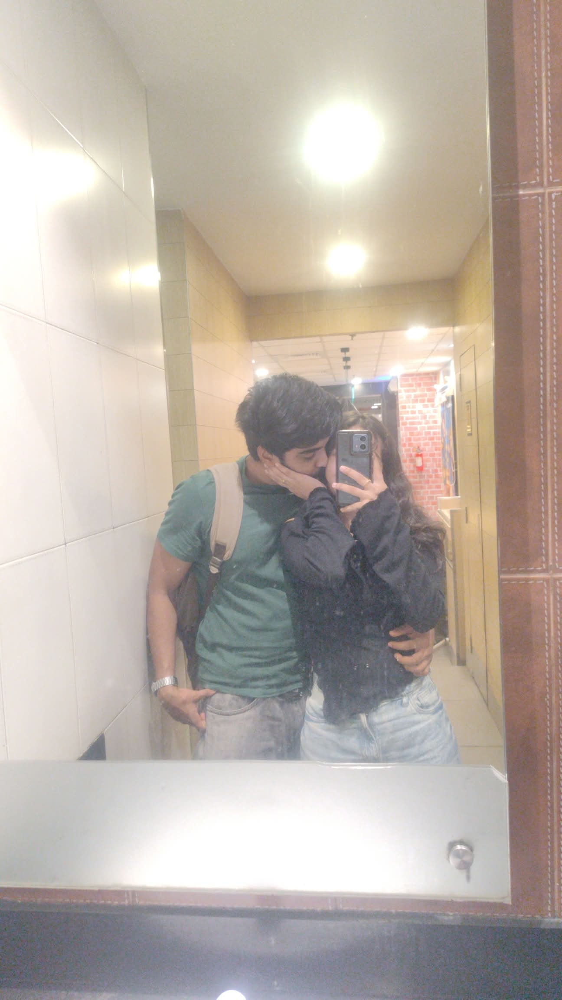
ek random woman ne bhi dekh liya humein
bina bole keh diya — yeh dono toh ho chuke
05
Helmet, ice cream, excavator
Movie late ho gaye the, toh nikal gaye. Helmet wahi chhoot gaya.
Ice cream collect karni thi, woh bhi bhool gaya.
Lagta hai upar wale ko ice cream se better dessert dena tha.
Movie mein helmet dikha. Main — oh fuck, MacD pe helmet chhoot gaya.
Tu boli, chill. Mil jayega. Nahi mila toh kya hua.
Apan hai, apan le lenge naya.
Woh baat meri andar utar gayi. Ki haan yaar, jo bhi hoga, dekha jayega.
Chal, kar lenge apan.
Phir movie mein ice cream dikhi. Are shit yaar, ice cream bhi khilana bhool gaya.
Tu boli, chhod yaar, chill karte hain. Mereko maza aata hai tere saath.
Interval. Tu boli, aaja helmet ek baar dekh aate hain.
Watchman ko bola, helmet lena hai, warna mummy daantengi.
Woh bola, ja, lekin jaldi aa. Main bola, isko bhi leke jaunga.
Woh — nahi, tu akela jayega. Main bola, nahi. Helmet nahi chahiye
agar tu nahi aa rahi. Phir unhone haan kar di.
MacD gaye, helmet pada tha. Dono — shit, mil gaya, mil gaya.
Itne khush, ek helmet pe. Phir wapas bhaage, hanging like children,
movie scene jaisa. Aur wahan excavator tha.
06
Our first kiss
Woh jagah thi — ambiance itna khoobsurat, jaise raat ne khud
hamare liye lights bichha di hon. Wahan humne pehli baar kiss kiya.
Craziest moment tha. Hamara moment tha.
Ice cream nahi, yeh dessert thi jo tu deserve karti thi.
God ne socha, nahi, isse better milna chahiye.
Aur mil gaya.
ice cream nahi, ek sundar mahol mila
us pal mein time ruka, aur hum mil gaye sach-sach
07
Perfect, baarish mein
Movie ke baad bahar nikalte hi tez baarish. Hum khade the, wait kar rahe the.
Tu ne hoodie pehni. Mujhe pata nahi kya hua —
maine haath hoodie ke andar daala, tujhe kamar se pakda,
aur hum gane lage.
Perfect
Tu meri baahon mein. Dream jaisa tha, ek beautiful song ke andar.
Tujhe baarish pasand hai. Main comfort zone wala banda hoon,
gila-maila nahi hona chahta. But us time —
chale yaar, jeete apni zindagi. Let’s just go. Jo bhi hota hai, dekha jayega.
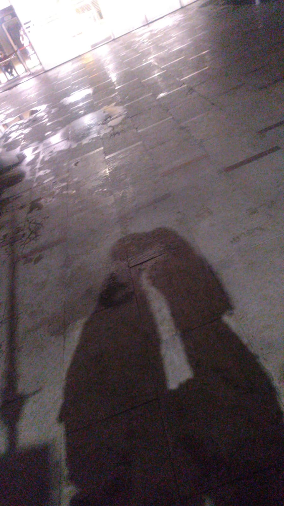
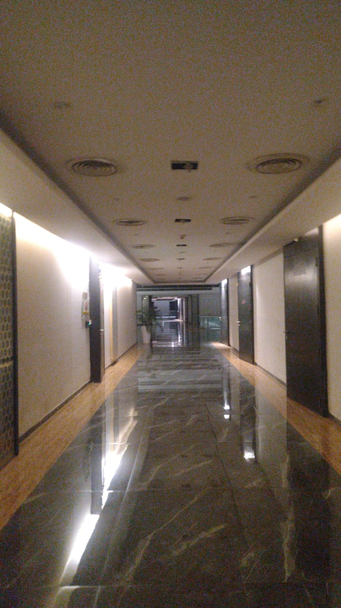
main baarish se bhagta tha, tu baarish se milti thi
us raat main bheeg gaya — teri baahon mein, Perfect pe
08
Hot coffee. Thandi baarish.
Bike pe nikal gaye, heavy rainfall, dono shivering like anything.
7-Eleven pe ruke. Coffee pi. Counter wale ne poocha, hot ya cold.
Main — bhai, mujhe dekh. Main kaamp raha hoon, tu cold pooch raha hai.
Of course hot chahiye.
Tu peeche baithi, mera bag pehen ke, mujhe pakad ke.
Main soch raha tha — dude, she is so pretty. She is so cute.
Mulund se Marine Drive, poora raasta kaampte hue.
Aur main phir se karunga.
09
Marine Drive
Wahan baithe, lambi baat hui. Tu thodi shy thi, thodi upset.
Phir maine woh baat bol di jo dil nahi rok raha tha —
I am getting attached to you.
Tu boli, I don’t want to get attached. Main bola, theek hai.
Relation ek insaan ki marzi se nahi chalta. Dono ki decision se chalta hai.
Agar tujhe attachment nahi feel ho rahi, it’s okay. Hum aage nahi badhenge.
Phir tu chup ho gayi. Phir meri baahon mein royi.
Heaviest moment tha. Last thing I don’t want in my life is
to see you cry.
Please bol, kya ho raha hai, main keh raha tha. Tu kuch nahi bol rahi thi.
maine kaha main attach ho raha hoon
tu chup rahi, phir meri baahon mein royi — samundar bhi sharma gaya
10
Woh garden jo wait kar raha tha
Baarish ab bhi, dono kaamp rahe the. Chalo, kuch khaate hain,
body ko garmi mile. Marines se ghar ki taraf. Tu apni bike pe so rahi thi.
Mirror mein dekh ke soch raha tha, kitni cute hai. Ek garden dikha.
Hey Vedu, energy hai explore karne ki?
Tu boli, are, main 100% ready. Mere mein energy bahut hai.
Hum chale. Attachment wali baat main ignore kar raha tha.
Sirf yeh soch raha tha, kaise tujhe hasau, kaise tujhe alive feel karaun.
Phir tu ne wahi sawaal poocha. Tu mujhse sach mein nahi milega?
Main khud se jhoot nahi bol sakta. Main attached feel kar raha hoon,
matlab main sach bol raha hoon. I am a man of my words.
Main milna chahta hoon. Forever, aise hi masti, random logon ke saath
baithe, tera naam lena — haan, yeh meri hai. Kyunki hum vibe karte hain.
Jab hum around each other hote hain, hum literally bachche ho jaate hain.
That’s the fire.
Phir garden mein ek uncle ruk gaye. Teen daanton ki woh smile —
thodi kachi, thodi shy, lekin itni saaf ke dil turant garam ho jaaye.
Seedhe, pyaare insaan. Cute, haan, woh sach mein cute the.
Unhe pata nahi tha hum kya soch rahe hain. Unhone aise hi,
jaise koi dua de raha ho, kaha — shaadi kar lo tum dono,
jaise Yusuf ne Riddhi se ki. 😊😊
Woh ek baar nahi aaye. Doosri, teesri, chaar se zyada baar —
sirf humse baat karne. Jaise garden unka bahana tha,
aur hamari hasi unka raasta. Unhe nahi pata tha
ke unki woh masoom si dua hamare raat ka hissa ban gayi.
Phir meri aadat, tujhe tease karna.
Achha, ab attachment feel ho rahi hai? Sachi, tu mujhe jail legi?
Main bohot nakre wala banda hoon, bohot masti karta hoon.
Kya tu mujhe sachi jail legi?
Tu ne sir ko knock kiya, muskura ke.
Fucking cutest moment. Wahi smile.
Mulund wapas, tez baarish. Main bola, peeche so ja. Mirror mein dekh raha tha —
tu so rahi hai apni bike pe. Fucking cute.
Shop band thi. Aur guess what — jo garden main tujhe shuru mein dikhana chahta tha,
raat wahi le aayi. Chips, paani. Poori journey mein ek sip nahi piya tha.
Tu ne apne haath se mujhe khilaya.
“Yaar, main kar lungi. Main tujhe jail lungi.
Main tere dono sides jail lungi, theek hai?”
Agar tu mere saath hai, mujhe aur kuch nahi chahiye.
Bas teri loyalty. Baaki sab main dekh lunga. Future kaisa bhi ho,
tujhe bohot accha rakhunga. Main sach bolta hoon.
Trust me, aur mera haath pakad ke rakh — forever.
sir hilaya, muskuraayi — boli, main tujhe jail lungi
us smile ne meri poori zindagi lock kar di
11
Thodi der aur ruk ja
Phir time aa gaya tujhe ghar chhodne ka. Mulund station. Dono sad.
Thoda aur ruk jaate yaar. Thodi der aur ruk ja.
Haath pakde hue, hug. Face to face dekh nahi pa rahe the.
Train mein utara. Train abhi chali bhi nahi thi,
meri aankhein tujhe dekh rahi thi. Mat ja yaar. Itna jaldi mat ja. Please.
Tu numb thi. Main tujhe numb nahi jaane dena chahta tha.
Ek smiley face chahiye tha, pretty smiley face.
Hum nahi chahte the itna jaldi alag hona.
Ab bhi nahi chahte.
train khadi thi, tu jaane wali thi, main kehta raha — mat ja yaar
kuch alvida dil pe tattoo ho jaate hain, mitaaye nahi jaate
Woh raat thi jab tu mere liye aayi.
Woh raat thi jab hum hum ban gaye.
Memory 02
The Morning She Already Knew
Do hafte se tu meri neend mein thi. Aaj subah late utha. Phir bhi, sirf tere liye nikal aaya.
01
Do hafte ki pyaas
Do hafte. Har raat, har subah — tu.
Manali ke chhote-chhote pal jo main tujhe dena chahta tha.
Woh cheezein jo gift nahi kehlati, lekin dil ke kareeb rakhi thi.
Aur ek cheez jo mujhe jeene ke liye motivate karti hai —
woh watch. Gift nahi. Maine tujhe di. Kyunki jo mujhe sambhalti hai,
woh ab tere haath pe rehni chahiye.
Main late utha. Neend adhuri. Phir bhi nikal pada.
Ek ghanta bees minute bike. Body thak ke caffeine maang rahi thi.
Aur dil maang raha tha — bas tujhe.
02
Cute steps, coffee, ek chhoti si bike
Hostel. Maine tujhe call kiya.
Phir woh chehra. Itna chhota, itna pyaara —
tu meri taraf chalti aayi, cute-cute steps,
haath mein cup, haath mein ek chhoti si bike.
Main dekh ke ruk gaya. Itni cutish walk, itni narm subah.
Tune woh cup diya. Main pyaasa tha us coffee ka —
lekin us pal tu coffee se bhi zyada garam thi mere liye.
Main sach mein pyaar kar baitha us pal se, dobara, gehra.
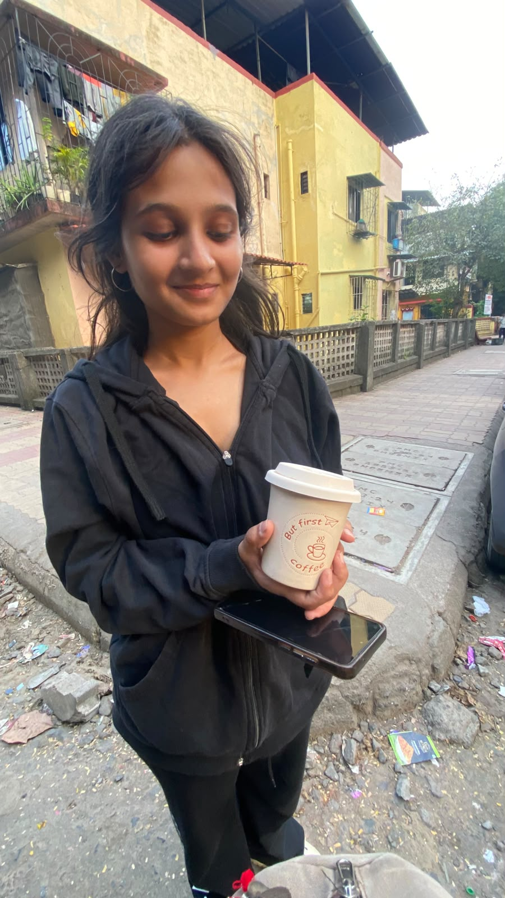
But first, coffee. Pehle tu. Hamesha tu.
Tu jaldi mein thi. Chalo yahan se, koi dekh lega.
Main samajh gaya. Hum nikal pade.
do hafte se tujhe dekhna chahta tha
tu coffee leke aayi — jaise meri pyaas tujhe yaad thi
03
Tees minute aur, phir sukoon
Garden tees minute door tha.
Pehle se ek ghanta bees minute nikal chuka tha.
Phir bhi chale. Kyunki tu kehti, chalo.
Wahan garden itna shaant tha, jaise duniya ne hamare liye volume band kar diya ho.
Hum baithe. Aur wahi, us shaanti mein,
jo main soch ke aaya tha — woh sab tujhe diya.
garden.
kuch pal chhupaye rehte hain, jab tak tu unhe khole.
yeh dil bhi kitna paagal hai
ke pyaar to tumse karta hai
par saamne tum jab aate ho
kuch bhi kehne se darta hai.
yeh gaana teri shyness ke naam.
pehli raat se alag. is baar tu itni shy thi. isliye yeh pal tujhe deserve karta hai.
tap to feel this
04
Gulab, watch, gulabi baaliyan
Us garden mein maine tujhe rose diya. Gaaya. Nacha.
Duniya ki koi nazar nahi — sirf tu, thodi si shy, thodi si meri.
Phir woh watch. Jo mujhe har subah uthati hai, jo mujhe inspire karti hai —
maine woh tere haath pe rakh di. Gift ka lafz chhota padta hai.
Yeh toh meri himmat ka tukda hai, ab tere paas.
Aur woh chhoti si pink earrings.
Tujhe pink pasand hai. Main jaanta bhi nahi tha ki main pink hi uthane wala hoon —
unhe dekhte hi dil khich gaya. Unknowingly, teri colour meri shopping ban gayi.
Tu itni khush hui. Itna blush. Itna saara blush.
Main tera woh shy chehra dekh ke doob raha tha.
tu shy thi, isliye yeh gaana tera tha
ek gulab, ek watch, gulabi baaliyan — aur tu, meri dua
05
Black pe black
Unknowingly hum dono black mein the.
Jaise subah ne kah diya ho — aaj tum ek dusre ke kapdon mein bhi miloge.
Mirror ke saamne tu ne mera chehra pakda. Ek kiss.
Wahi photo jo ab is kahani ka chehra hai.
ek aur pal chhupa hai
tap — dekh, hum kaise ek rang ke the
06
Dessert with a dessert
Phir pet ne yaad dilaya — yaar, kuch khana hai.
Hum chhote se pastry pe ruk gaye. Ek hi, dono ne baanti.
Tu dessert. Woh pastry bhi dessert.
Itna meetha pal, itna seedha.
07
Doosri morning ki picture
Phir movie. Morning show. Cute si film.
Main aisa banda nahi — aisi films pehle meri nahi thi.
Lekin tere saath, main poora usme baith gaya.
Best movie. Best person. Tera haath mere haath mein.
Tu meri baahon mein. Screen chalu thi, lekin asl film hum the.
Phir ek married couple aaya — yeh hamari seat hai.
Main thoda gusse mein. Dude, yeh tumhari nahi.
Check karo. Uske partner aise the jaise Doremi —
halki si hawa, koi jhagda nahi. Hum unhe bhool gaye.
Aur sach? Film toh humne dekhi hi nahi.
Hum khud mein uljhe rahe. Pata hi nahi chala screen pe kya chal raha tha.
Bahar nikalte hi dono ne idhar-udhar dekha.
Koi nahi dekh raha. Phir woh pal —
jo sirf hamara tha, jo shabdon se bada tha.
08
Door se, ek pretty si ladki
Bhookh phir aayi. Main order kar raha tha,
aur tu door se mujhe record kar rahi thi.
Itna cute. Main wahan se tujhe dekh raha tha —
ek pretty si ladki, meri wait karti hui.
Main tujhe us pal bahut, bahut, bahut pyaar kar raha tha.
09
Mandir, jheel, udta hua waqt
Phir hum baithe. Garden nahi — mandir ke bagal ek khoobsurat jheel.
Baatein. Itni narm, itni gehri.
Waqt titali ban ke ud gaya.
Laga, abhi ek ghanta hua hoga.
Phir pata chala — 9 baje se 5:30.
Itni der, itni kareeb, itni kam.
Tujhe 6 baje hostel pahunchna tha.
Deadline khadi thi, aur hum abhi bhi us jheel pe the,
jaise raat rok denge.
10
Woh pearl tere haath pe
Watch dheeli thi. Main chahta tha woh pearl —
woh watch — tere haath pe perfect baithe.
Main dhoondta raha. Aur ruk gaya Titan pe.
Wahi series. Wahi cheez jo mujhe personally motivate karti hai.
Jo main chahta tha tu dekhe, usi dukaan pe zindagi le aayi.
Wahan wali ma’am itni pyaari thin. Humein itna adore kiya.
Muskurake boli, nahi nahi, aapse nahi lenge.
Watch theek kar di, bina paise ke.
Woh muskaan bhi hamari kahani ka hissa ban gayi.
11
Thoda time aur
End mein tujhe hostel chhod aaya.
Dono ke munh pe wahi baat — thoda time aur. Thoda time aur.
Lekin waqt phir titali ban gaya. Ud gaya.
9 se 5:30. Ek coffee. Ek gulab. Ek watch. Ek blush.
Aur tu, jo do hafte se meri saanson mein thi.
yeh dil bhi kitna paagal hai, ke pyaar to tumse karta hai
par saamne tum jab aate ho, kuch bhi kehne se darta hai
Us subah tu coffee leke aayi.
Us shaam tak meri poori zindagi tere haath mein dheeli padh chuki thi — aur main chahta tha wahi.
Memory 03
The Night We Didn't Come Home
Tu naach rahi thi, aur main dekh ke sharma raha tha. Phir raat ne humein ghar jaane hi nahi diya.
Garba. Phir samundar. Phir ek thali jisme teri hansi thi.
01
Pehle safed
Raat shuru hone se pehle hi tu screen pe thi.
Safed dupatta, laal choli, bindi, aur woh muskaan
jo seedha mere gaal pe lagti hai. Main corner mein chhupa sa has raha tha,
lekin sach yeh hai — main tujhe dekh ke ruk gaya tha.
Video pe bhi tu itni khoobsurat thi ki maine screen ko do baar kareeb kar liya.
Jaise kareeb karne se tu sach mein mere saamne aa jayegi.
Tu screen ke us paar thi, aur mera dil usi paar chala gaya.
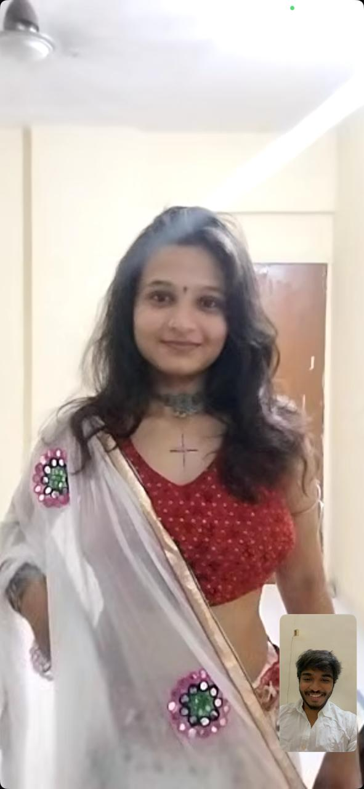
Safed mein thi tu. Main usi pal se tera ho gaya.
safed mein thi tu, aur mera dil laal
screen ke us paar bhi tu mujhe sharma gayi
02
Dhol ke andar, sirf tu
Phir woh lehenga. Kaala, laal, phoolon se bhara —
aur tu usme aisi ki dhol bajna shuru hua aur meri saans ruk gayi.
Log nach rahe the. Main sirf tujhe dekh raha tha.
Ek chakkar mein tu hansi, aur main apna kadam bhool gaya.
Itni baar bola nahi, isliye yahan likh raha hoon.
Us poori mehfil mein sabse khoobsurat cheez tu thi.
Saibo Re teri story pe. Tari Aankh meri pe.
Do phone, ek hi baat — main tujhe chhupa nahi pa raha tha.
Humne Garba khela. Hasi, masti, itni photos.
Beech-beech mein tera haath mere haath mein aata,
aur mehfil meri nahi rahi.
Sirf tu rahi — thodi si sharmaayi hui, poori meri.
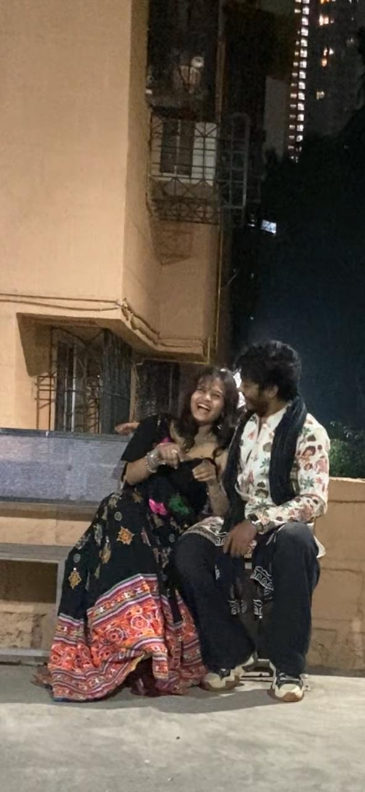
Tu hansi, aankhein band. Mera seena garam ho gaya.
Bench pe tu itni zor se hansi ki aankhein band ho gayin.
Mera haath tere peeche tha. Tu mere kandhe ki taraf jhuki,
aur us pal mujhe laga jaise raat ne kaan mein keh diya ho —
yeh ladki teri hai, aur tu abhi bhi uske layak banne ki koshish kar raha hai.
Teri hansi sunkar main bhi sharma gaya, Vedu. Sach.
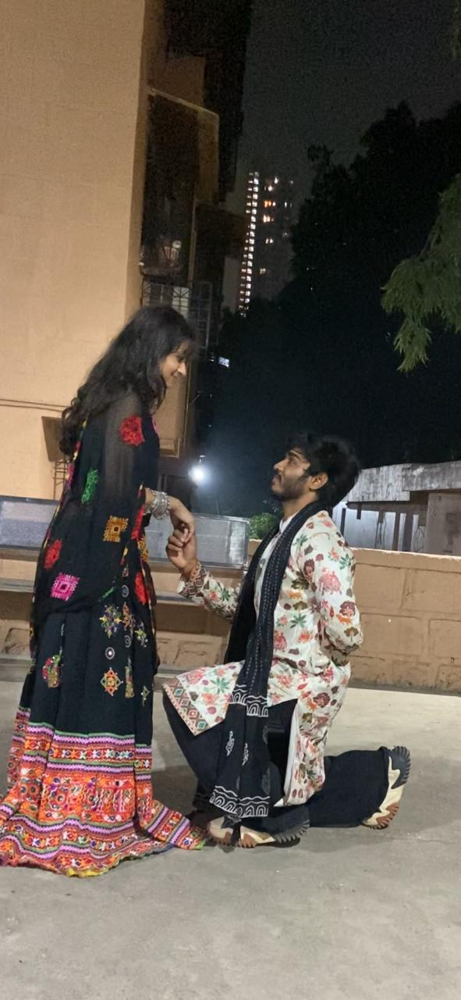
Neeche se teri aankhein. Upar se teri sharmaahat.
Phir main ghutnon pe aa gaya. Neeche se teri aankhon mein dekha.
Tera haath mere haath mein — thoda naram, thoda garm.
Tu upar se muskura rahi thi, thodi si shy, thodi si meri.
Kuch filmy bolna chahta tha, bol nahi paya, isliye ghutne bol gaye.
Agar tu yeh photo dekh ke aankhein jhuka le, toh wahi pal dobara jee liya.
tere haath mein mera haath, aur meri himmat khatam
ghutnon pe aaya, kyunki khade khade tujhe dekhna bhaari pad gaya
highlight · our reel
Tu ab bhi nach rahi hai
Is reel mein tu nach rahi hai, aur main ab bhi wahi khada hoon. Tap karo. Dhol suno. Thoda sa sharma jao.
play the reel
Tu naachi. Main dooba.
03
Tere haath, meri bike
Dhol ke baad bhi tujhe chhodna nahi tha.
Bike nikali. Tu peeche baithi, aur tere haath mujhe lag gaye.
Late night. Marine. Hawa itni thi ki teri laton,
tera dupatta, aur meri saari himmat ud rahi thi.
Main seedha nahi dekh pa raha tha.
Dil mein dekh raha tha. Tu kitni paas thi.
Teri saans, teri hansi, sadak ki hawa —
teeno mere gale tak aa rahe the.
Samundar ke saamne tu. Hawa ne tujhe chhua. Main dekhte reh gaya.
Wahan tu paani ki taraf thi. Main tere peeche,
yeh sochta hua ki itni badi duniya hai
aur meri nazar sirf tere kandhe, teri gardan, teri khamoshi pe atki hai.
Tu samundar dekh rahi thi. Main tujhe.
Ek hi raat mein do ibaadat.
hawa ne teri laton ko chhua, main dekhte reh gaya
samundar bhi sharma gaya, jab tu uske saamne muskuraayi
04
Bhookh bhi tere saath pyaari thi
Phir bhookh aayi, aur sheher so gaya.
Hum nahi soye. Dukaanen band thi,
ek jagah ne shutter gira diya, doosri jagah andhera tha.
Hum phir bhi dhundhte rahe —
kyunki tere saath bhookh bhi pyaari lagti hai.
Tu boli, mil jayega.
Teri awaaz mein itna bharosa tha ki main bhi maan gaya.
Aur mila. Garam khaana. Hum paas baithe.
Itne paas ki tera haath mere plate tak aa jaaye,
aur mera dil usse pehle pahunch jaaye.
Pehli bite pe tu chup ho gayi.
Phir woh muskaan — thodi si sharmaayi hui, thodi si jeet wali.
Main tujhe dekh raha tha aur soch raha tha,
bhookh ke beech bhi tu itni pyaari thi ki main khaana bhool gaya.
Raat ka aakhri gaana plate pe nahi tha. Teri hansi pe tha.
bhookh thi, par pehle teri muskaan khaayi
sheher soya raha, hum ek doosre mein jaage rahe
05
Yeh isliye likha hai
Agar tu yeh padh ke blush kare, toh main yahi chahta tha.
Ek safed dupatta jisme tu shuru hui.
Ek lehenga jisme tu meri saans le gayi.
Ek reel jisme tu ab bhi nach rahi hai.
Ek bike jisme tere haath mere the.
Ek samundar jisne tujhe dekha, aur main jal gaya.
Ek plate jiske saath teri hansi thi.
Main us raat ghar nahi gaya tha.
Main tere paas hi reh gaya tha.
Aur agar kal phir poochhe koi —
us raat kya hua —
main yahi kahunga. Tu thi. Bas tu.
likh raha hoon taaki tu aankhein jhuka le
us raat tu khoobsurat thi, aur main tera ho chuka tha
Tu naachi, aur main sharma gaya.
Tu hansi, aur main ghutnon pe aa gaya.
Tu mere peeche baithi, aur raat ko ghar yaad hi nahi raha.
Memory 04
Tere Kamre Mein Zindagi
Aakhri paper ke baad main ghar nahi gaya. Main tere paas aa gaya.
ek nazm, un dinon ke naam
aakhri paper khatam hote hi main tere paas aa gaya
ghar nahi gaya, seedha tere kamre ka darwaza khatkhataya
tu ne khola, aur thakaan ko sukoon mil gaya
un dinon main mehmaan nahi tha, main tera tha
subah tune protein coffee banayi, omelette bhi
main nashta nahi pee raha tha, teri subah pee raha tha
tu jhuk ke mujhe khila rahi thi, haath mere haath mein
main sharma gaya, kyunki tu itne pyaar se jhuki thi
film chal rahi thi, par meri nazar tujhpe thi
teri baahon mein raat, mera haath teri kamar pe
mall ke sheeshe mein tu mere saath khadi thi
leather pe teri muskaan, aur main pose bhool gaya
tu do khilone pakad ke itni khul ke hansi
main dekh ke pighal gaya, meri bachchi
tere baal mere gaal pe the, tera sir mere sir se
hum pizza khaane nahi, ek doosre se chipakne aaye the
01
Paper ke baad, seedha tere paas
Aakhri paper khatam hote hi main ghar nahi gaya.
Main tere kamre aa gaya. Tu ne darwaza khola,
aur thakaan ko bhi ek jagah mil gayi.
Un dinon main mehmaan nahi tha. Main tere paas reh gaya.
paper khatam hote hi main tere darwaze pe tha
tu ne khola, aur main ghar aa gaya
02
Protein coffee aur omelette
Subah humne saath nashta banaya. Tere kitchen mein.
Protein coffee us baingani cup mein, aur neeche teri egg omelette.
Koi hotel nahi tha. Tu ne banaya, main tere saath baitha,
aur woh subah bilkul hamari thi.
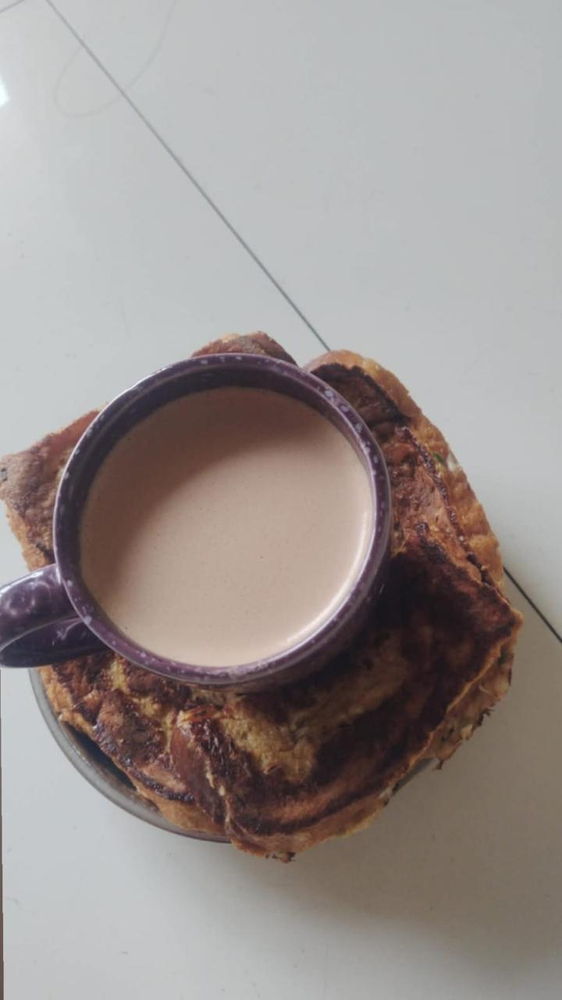
Tere haath ki coffee. Teri omelette. Meri subah.
protein coffee tere haath ki, omelette bhi teri
main nashta nahi, teri subah pee raha tha
03
Tu jhuk ke mujhe khila rahi thi
Tu mere upar jhuki. Ek haath mein niwala, doosra haath mere haath mein.
Tu mujhe khila rahi thi, itne pyaar se, jaise yeh sirf khaana na ho.
Main neeche se tujhe dekh ke sharma gaya.
Cuddle ki raatein isi narmi mein hoti hain —
tu paas, main chup, dil tez.
Tu jhuki. Main sharma gaya. Yeh pal hamara tha.
tu jhuk ke mujhe khila rahi thi, haath mere haath mein
main sharma gaya, kyunki tu itne pyaar se jhuki thi
04
Film chal rahi thi, main tujhe dekh raha tha
Raat ko hum kahin nahi gaye. Tere kamre mein film lagayi.
Light dheemi thi. Mera haath teri kamar pe tha,
teri saans mere kandhe pe. Screen pe kahani chal rahi thi,
par main tujhe dekh raha tha. Tu meri baahon mein thi.
Hum thake hue the, aur ek doosre ko sambhaal rahe the.
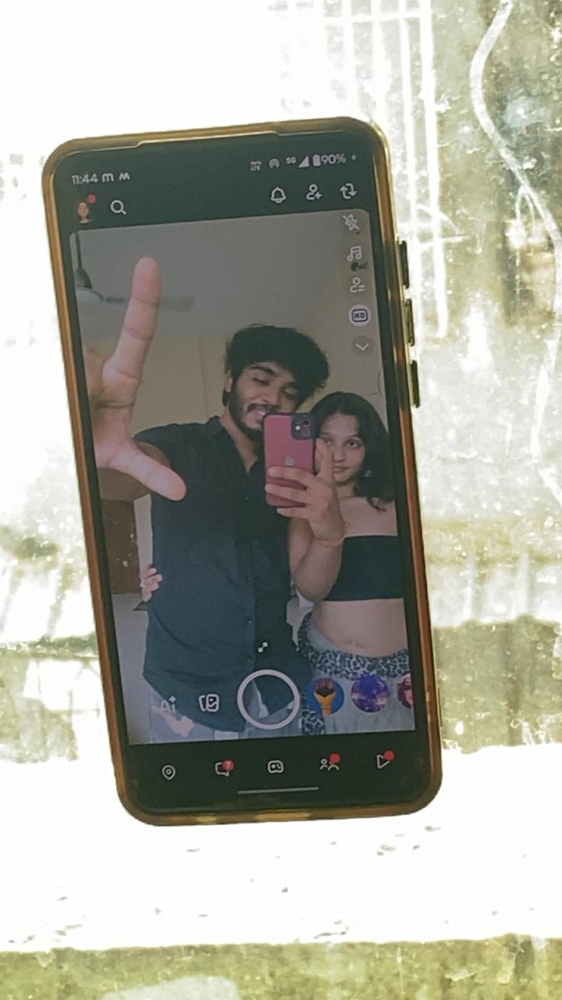
Tere kamre ki raat. Mera haath tere peeche. Tu paas.
film chal rahi thi, par main tujhe dekh raha tha
teri baahon mein raat, mera haath teri kamar pe
05
Sheeshe mein tu mere saath
Phir hum mall gaye. Sheeshe ke saamne tu mere saath khadi thi,
itni paas ki leather jacket aur teri muskaan ek hi saans lag rahe the.
Maine pose banaya. Tu hansi. Aur main sharma gaya,
kyunki sheesha bhi keh raha tha — yeh dono ek hain.
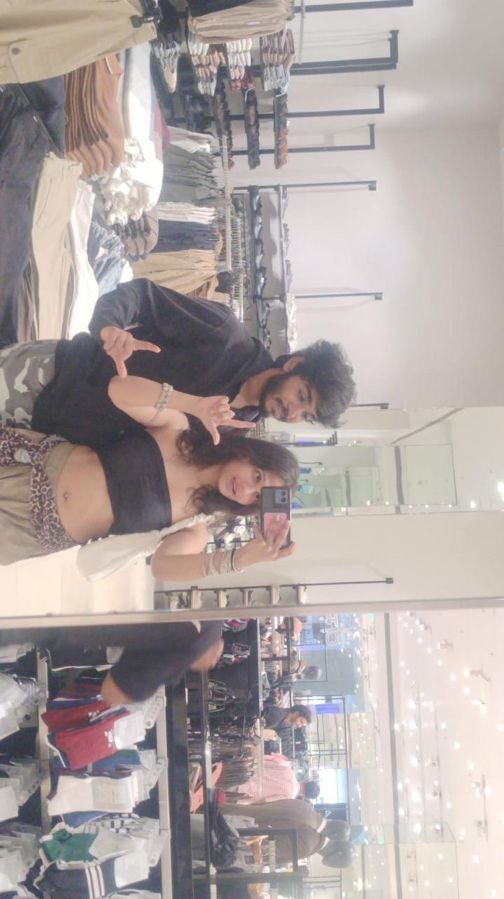
Tu mere saath khadi thi. Main pose bhool gaya.
sheeshe mein tu mere saath khadi thi, itni paas
teri muskaan dekh ke main apna pose bhool gaya
06
Do khilone, aur teri khuli hansi
Wahi din. Tu neeche baithi, ek bhura kutta aur ek safed,
dono khilone bahon mein. Muh khola, aur itni khul ke hansi
ki poori dukaan teri lag gayi. Main saamne khada dekh raha tha
aur pighal gaya. Meri bachchi. Best din aise hi hote hain.
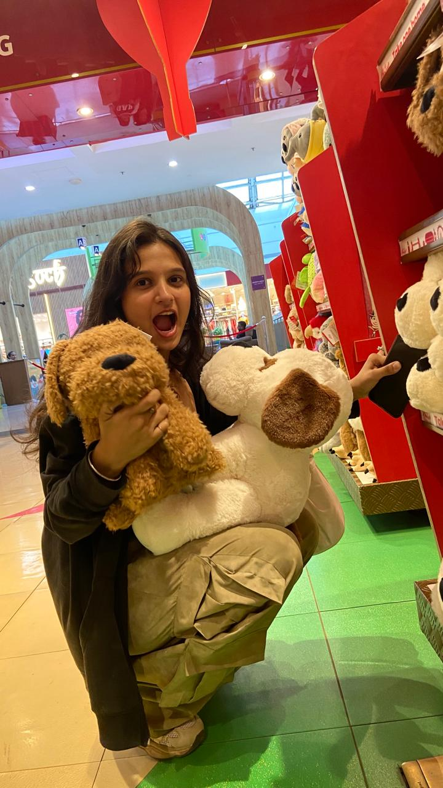
Tu hansi. Main dekh ke pighal gaya.
tu do khilone pakad ke itni khul ke hansi
main dekh ke pighal gaya, meri bachchi
07
Tera sir mere sir se laga hua
Domino’s. Garm light. Tera sir mere sir se laga tha,
tere baal mere gaal ko chhu rahe the. Tu muskura rahi thi.
Chashma table pe pada tha, kyunki tujhe dekhne ke liye
mujhe kuch aur nahi chahiye tha.
Hum pizza khaane aaye the. Asal mein hum ek doosre se chipakne aaye the.
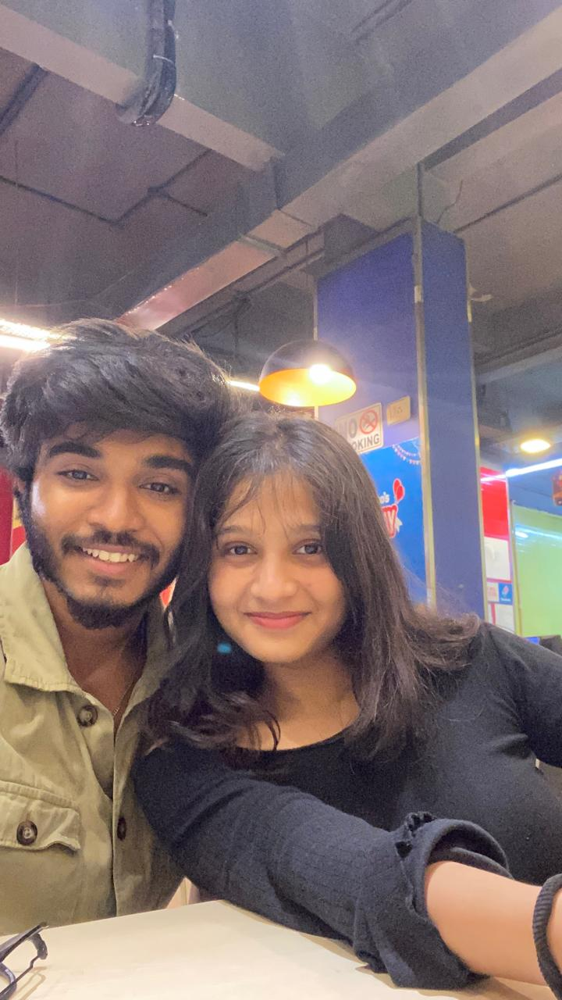
Tere baal mere gaal pe. Tera sir mere sir se.
tere baal mere gaal pe the, tera sir mere sir se
hum pizza khaane nahi, ek doosre se chipakne aaye the
08
Yeh mehmaan waale din nahi the
Exam ke baad ki thakaan. Teri protein coffee, teri omelette.
Tu mujhe khila rahi thi. Film tere kamre mein.
Sheeshe mein hum. Khilone. Aur Domino’s pe tera sir mere sir se.
Hum ek doosre ko sambhalte rahe, aur kamra chhota pad gaya.
yeh mehmaan waale din nahi the
hum tere kamre mein apni zindagi jee rahe the
Paper khatam hua.
Zindagi tere kamre mein shuru hui.